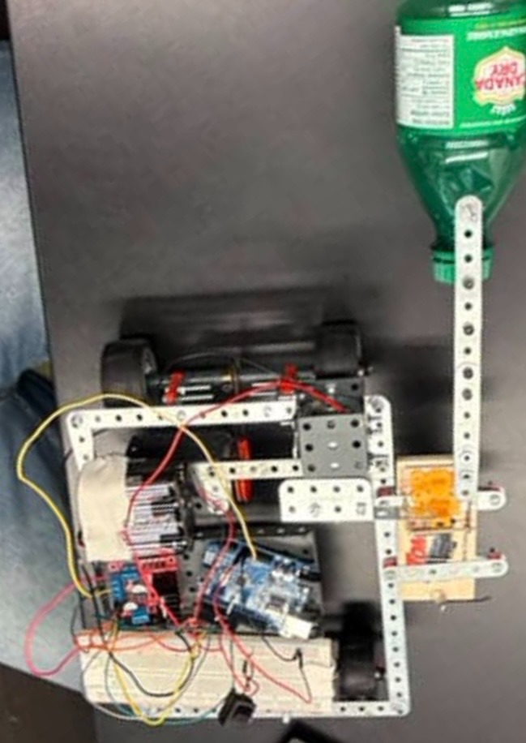
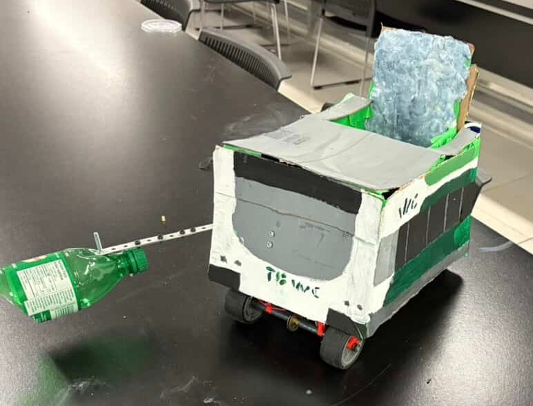

The brief
Design and build a miniature Arduino-based teddy bear wheelchair for an engineering design project at the University of Guelph, with attention to stability, maneuverability and mechanical design at a small scale. The prototype had to bring mechanical and electrical subsystems together and complete two required tasks on test day.
My contribution
- Built the drivetrain and launcher arm and helped integrate them into the physical prototype.
- Planned where components would fit, accounting for available space and the robot’s centre of mass.
- Connected motors and wired components with a breadboard and Arduino board.
The problem that changed the build
Thin elastic bands in the drivetrain broke during testing. A working layout on the bench was not enough: the drive needed to transmit motion reliably under load.
I replaced the thin bands with a thicker band and adjusted its position to increase tension. That change addressed the failure using the materials and space available.
Result
The robot completed both required tasks on test day.
This was a course-scale prototype. The useful engineering lesson was the connection between component placement, drivetrain tension and what actually happens during a physical test.
Build record

